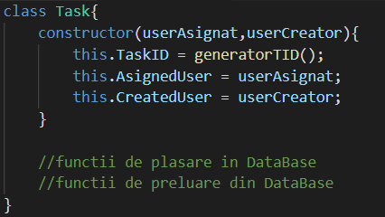

3. Detalii de implementare
3.1. Backend
Baza de date MySQL care va avea principalele legaturi prezentate mai jos.

Codul din backend va contine clasele Task si User care vor face manipulare de informatii pe baza de date si vor avea urmatoarea structura:
Vom utiliza si module pentru Notificari, TaskResponse, TaskDescription si pentru statistici.
3.2 Frontend
Pentru a mentine cat mai simpla partea de client, vom folosi doar apeluri asincrone catre API.
3.3 API
Endpoint-urile vor fi:
'/register' - POST ==> creaza un nou user in baza de date : Clientul trimite informatiile structurate intr-un JSON.
'/login' - POST ==> se verifica parola : Clientul trimite informatiile structurate intr-un JSON
'/createdtasks' - GET ==> task-urile create de utilizator: Serverul trimite informatiile structurate intr-un JSON
'/asignedtasks' - GET ==> task-urile unui utilizator: Serverul trimite informatiile structurate intr-un JSON
'/taskresponse' - POST ==> raspunul unui task : task-urile create de utilizator: Clientul trimite informatiile structurate intr-un JSON